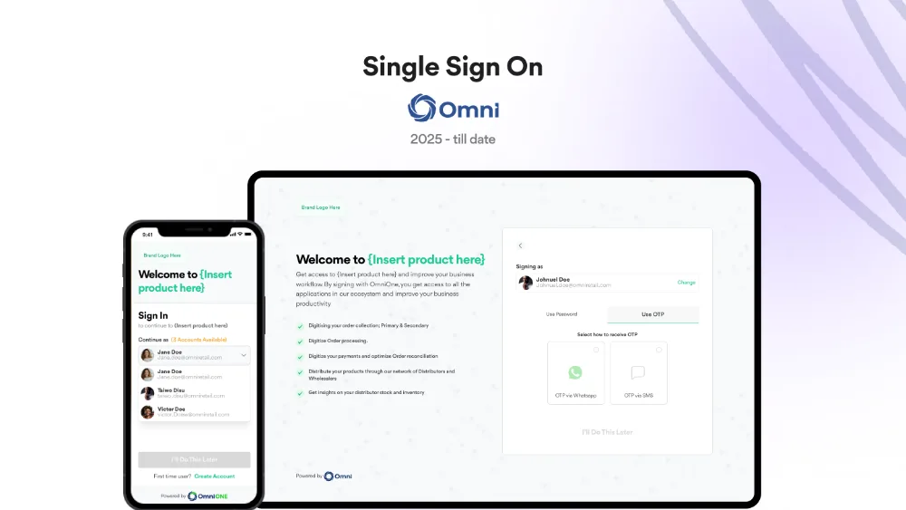

OmniRetail · Product design · Shipped · 2025 to now
One sign-in for every Omni product
When OmniRetail began building its design system, one of the early decisions was a single sign-in for every product: Omnibiz for retailers, OmniHub for distributors, OmniOne for manufacturers and Omnipay for payments. I designed it. The form was the easy part. The work was making one sign-in feel like it belongs to whichever product you came from, and making it work for people who are not email-first and who sign in from different countries.
Summary
I designed one sign-in for the whole Omni family. The link you arrive from decides what it says and how it looks, so you always know which product you are entering. If you have access to more than one product, you choose where to go after you sign in. A first round of testing changed two things: a phone number became a first-class way to sign in, and the phone number field and its errors now follow the country the person picks.
Role
Senior Product Designer, led the design of the shared sign-in
Scope
Entry screen, ways to prove who you are, product chooser and country-aware phone numbers, on web and mobile
Timeline
2025 to now
Products
Omnibiz, OmniHub, OmniOne and Omnipay
Evidence
Shipped across the ecosystem. One support figure was reported to me, below
Status
Shipped
What shipped, and what I can defend
The shared sign-in is live across the OmniRetail products. What I can defend is the design, the one decision behind it and the two changes that came out of testing. One result was reported to me: auth-related support tickets fell by 30%. I did not run that measurement, and the period and baseline were not shared with me, so it is labelled as reported. The measures that would settle it are listed below.
One door, many places you arrive from
One sign-in
The design system was being built to share patterns across products. A single sign-in meant one place to get right and one thing to keep consistent, instead of a separate way in for every product.
Many starting points
Nobody arrives at “a sign-in”. They arrive from a specific product, such as an Omnipay landing page. A shared screen risks feeling generic and leaving people unsure which product they are about to enter.
Constraints
- 01 One Screen, Not Four The same sign-in had to serve every product, so it could not be four separate pages with different rules.
- 02 Know Where You Are Someone arriving from Omnipay has to see that it is Omnipay they are signing in to, even though the screen is shared.
- 03 More Than One Way To Prove It A password, a PIN or a one-time code, depending on how the person is set up and what suits them.
- 04 More Than One Product Per Person One account can open several products, so the person needs a clear way to choose where to go.
What testing changed
We tested a first pass and the feedback changed the design in two places. Both came from the same fact: the people using these products are not all email-first, and they sign in from different countries. Add: how many people tested the first pass, where and when. Confirm the full list of countries.
Email first
The first pass asked for an email address. Feedback showed that many people identify themselves by phone number, especially with one-time codes in the flow, so I added phone number as a way to sign in.
Numbers differ by country
Omni runs in several countries, including Nigeria, Kenya and Ghana, and each writes phone numbers differently. The person picks a country, and the number field and its error message follow that country’s format instead of showing one generic error.
The design
One shared screen that takes its name, logo and a hint of brand colour from the link you arrived from, then steps you through proving who you are and, if you need it, choosing a product.
Shared sign-in · Phone and desktop
The product name and logo fill in per product. People with more than one account on a device can choose who to continue as, and sign in with a password or with a one-time code sent by WhatsApp or SMS.

How a sign-in runs
- 01 Arrive From A Product The link carries the product, so the screen opens as that product’s sign-in.
- 02 Say Who You Are A phone number or an email, with the number field following the country you choose.
- 03 Prove It A password, a PIN or a one-time code, sent by WhatsApp or SMS.
- 04 Choose Where To Go If your account opens more than one product, pick which one to enter.
The One Decision
I chose to let the link decide the sign-in’s identity, instead of building a separate sign-in for each product or asking everyone to pick a product first. One shared screen is easier to keep consistent, and it still reads as the product you came from because the name, logo and a hint of brand colour change with the link. The trade-off is that each product’s sign-in feels slightly less its own, so I kept the brand colour subtle and let the name and logo answer the question “where am I?”.
Outcome
Auth-related support tickets · Reported
30%
Fewer tickets, as reported to me. I did not measure this, and the period and baseline were not shared.
The reported drop is encouraging, but it does not say which part of the design earned it. These are the three measures I would ask for first, in this order.
Sign-in completion by country
Whether the country-aware number field removed the failures it was built for, country by country.
Phone number against email
How many people choose each, which would confirm the first test’s finding at scale.
Code delivery by channel
How often a one-time code arrives and is used when sent by WhatsApp compared with SMS.
What would prove this wrong
If completion stayed low in one country even with its own number format, or if people still stopped at the product chooser, the shared screen would be hiding a real difference between products and countries, and a more tailored sign-in would have been the better call.
Reflection
A shared sign-in looks like a form problem, but it is really an identity problem: who is this person, which product are they trying to reach, and what do they actually have in their hand, an email address or a phone? The first test taught me not to assume the answer to that last question. I would now ask it before drawing the first screen.